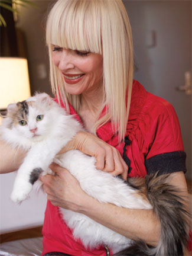

Munchie is a delightful three-month old kitten with a rambunctuous personality. He is in good health and looking for a responsible owner!
Happitails Animal Shelter has been operating in the Boston area for 92 years. We take all kinds of animals, from Aardvarks to Zambian Biting-Monkeys, and we do our best to find good homes for each and every one.
Here are a few of the pets we are trying to find homes for at the moment:
Munchie is a delightful three-month old kitten with a rambunctuous personality. He is in good health and looking for a responsible owner!

Bunnicula is an awesome bunny rabbit who might also be a vampire. We're looking into it, but he's damn adorable either way.
Here are some of our wonderful clients:

Bryce, a professional pilot, is also a three-time dog adopter here at Happitails. He is very happy with his new puppy Cloverfield, who loves to play fetch in the park.

Jennifer is a dental hygenist and aspiring actress. She adopted her new cat, Tajik, from the Happitails shelter last year. They are very happy together!